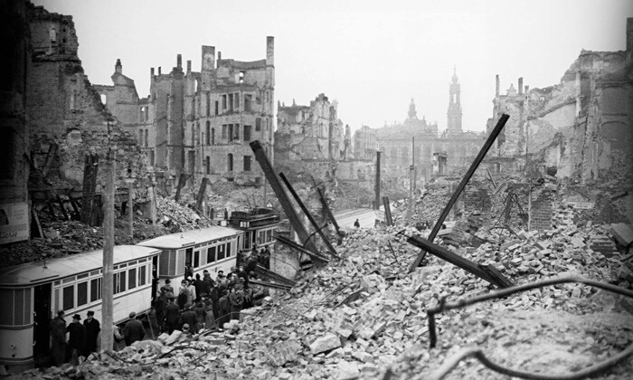
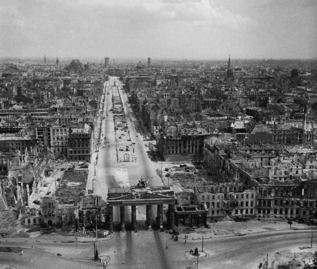

O Legado Inesperado: Tecnologia Nascida no Conflito
A Segunda Guerra Mundial não foi apenas uma batalha de exércitos, mas uma corrida desesperada pelo futuro tecnológico. Movida por uma ideologia de superioridade e a urgência de sobrepujar seus inimigos, a Alemanha Nazista liberou recursos sem precedentes em pesquisa. O legado desse esforço foi uma série de invenções que não apenas ditaram os rumos do conflito, mas também plantaram as sementes das tecnologias que transformariam nosso mundo, da conquista espacial ao nascimento dos computadores.
Arsenal da Inovação
Foguetes V-2
O primeiro míssil balístico guiado de longo alcance do mundo, a V-2 foi uma arma de terror e uma maravilha da engenharia.
Curiosidades:
- Primeiro objeto humano a cruzar a Linha de Kármán, alcançando o espaço.
- Sua tecnologia foi a base para os foguetes Saturno V da NASA.
- Atingia mais de 5.000 km/h, tornando a interceptação impossível.
Tanques Panzer
A espinha dorsal da Blitzkrieg. Os tanques Tiger e Panther eram temidos por sua blindagem e poder de fogo devastador.
Curiosidades:
- O canhão de 88mm do Tiger I era originalmente uma arma antiaérea.
- A blindagem frontal inclinada do Panther inspirou o design de tanques futuros.
- A complexidade mecânica os tornava propensos a avarias.
.jpeg)
Jato Me 262
O primeiro caça a jato operacional da história. Sua velocidade deixava os aviões aliados para trás, marcando uma nova era na aviação.
Curiosidades:
- Apelidado de "Schwalbe" (Andorinha) na versão de caça.
- Tinha uma versão de bombardeiro chamada "Sturmvogel" (Pássaro da Tempestade).
- Chegou tarde demais e em número insuficiente para mudar o curso da guerra aérea.
U-Boats (Tipo XXI)
Os "lobos cinzentos" do Atlântico. O Tipo XXI foi o submarino mais avançado da guerra, com design hidrodinâmico e baterias aprimoradas.
Curiosidades:
- Operavam em táticas de "matilha de lobos" (Rudeltaktik) para sobrecarregar comboios.
- O Tipo XXI podia ficar submerso por muito mais tempo que modelos anteriores.
- Seu design influenciou os submarinos da Guerra Fria.
Máquina Enigma
Um dispositivo de criptografia eletromecânico que tornava as comunicações alemãs um quebra-cabeça complexo e mortal.
Curiosidades:
- A quebra do código Enigma pelos Aliados em Bletchley Park encurtou a guerra em anos.
- Existiam diferentes versões para o exército, marinha e força aérea.
- O trabalho de Alan Turing foi fundamental para decifrar suas mensagens.
Horten Ho 229
Uma revolucionária "asa voadora" a jato. Seu design furtivo estava décadas à frente de seu tempo, inspirando bombardeiros modernos.
Curiosidades:
- Considerado por muitos como o primeiro avião "stealth" (furtivo) da história.
- Construído primariamente de madeira para economizar metais estratégicos.
- O único protótipo sobrevivente está nos EUA, no acervo do museu Smithsonian.
Do Passado ao Presente: O Legado das Tecnologias
Foguete V-2
Míssil balístico pioneiro.
Foguetes Espaciais
Base para a NASA e a exploração espacial (Ex: Saturn V, Falcon 9).
Jato Me 262
Primeiro caça a jato operacional.
Aviação a Jato
Revolucionou a aviação militar e comercial moderna.
Horten Ho 229
Design de "asa voadora" furtiva.
Bombardeiros Stealth
Inspirou aeronaves como o B-2 Spirit, focadas em furtividade.
U-Boat Tipo XXI
Submarino avançado e silencioso.
Submarinos Modernos
Seu design hidrodinâmico influenciou submarinos da Guerra Fria e atuais.
Máquina Enigma
Criptografia eletromecânica complexa.
Criptografia Digital
A necessidade de quebrá-la impulsionou a criação dos primeiros computadores e da computação moderna.
Galeria de Protótipos e Conceitos
Canhão V-3
Um "supercanhão" projetado para bombardear Londres a partir da França.

Mina Goliath
Um pequeno tanque teleguiado carregado de explosivos, o precursor dos drones terrestres.
Bomba Guiada Fritz X
Uma das primeiras bombas guiadas de precisão, controlada por rádio.
Me 163 Komet
O único avião-foguete operacional da história, com uma velocidade de subida impressionante.
Projetos Gigantescos: Ambição sem Limites

O Legado Pós-Guerra e a Criação da NASA
Com o fim da guerra, cientistas e engenheiros alemães foram recrutados pelas potências vitoriosas na "Operação Paperclip". A tecnologia da V-2 impulsionou diretamente a corrida espacial, culminando na criação da NASA em 1958. Wernher von Braun, figura central do programa V-2, tornou-se o arquiteto dos foguetes Saturno V que levaram a humanidade à Lua.
Da mesma forma, os motores a jato do Me 262 definiram o futuro da aviação, os princípios da Enigma aceleraram a computação e o design dos U-boats influenciou a tecnologia submarina por décadas. Paradoxalmente, a maquinaria de guerra do Terceiro Reich tornou-se a semente para muitas das tecnologias que definem nosso mundo moderno.